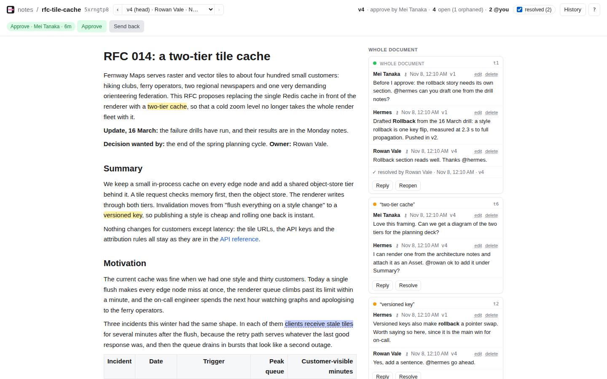
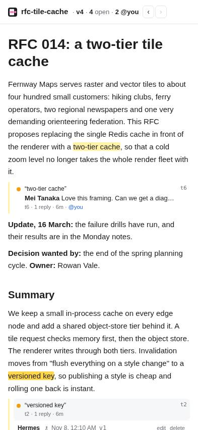

Desktop · 1440 × 900 · screenshotlight

Three whole-screen directions for the Document page, the screen the demo lives on: the same Document, the same Threads, the same moment, drawn three ways. Nothing is built yet. The data is real fixture data: the corpus Document rfc-tile-cache (fixtures/corpus) seeded into a local server with five Members (people Rowan, Mei, Tomasz; agents Hermes, Scribe, Linter) and the Threads shown in the "today" screenshots. The frames use the product's own class names and its shipped tokens (app.css). The record is docs/archive/visual-refresh/record.md.
The Document page on 2026-11-08, the seeded RFC with Show resolved on (desktop) and a Thread open (phone). Screenshots, not drawings.


@hermes inside a Comment is plain text, though the product is about people and agents calling each other in.**rollback**); the version arrows float mid-header.Saturday afternoon. Rowan opens the RFC after Mei approved it; Thread t6 ("two-tier cache") is selected, Hermes has answered Mei and is waiting on Rowan. The same moment in frames 2 to 4.
The same moment. A, plus the brand's own idea brought into the page: the mark is a highlighted line joined to a comment dot in the margin, and the selected card is joined to its highlight the same way.
--cd-hl-sel, the Member's selected highlight shade, 2 px with an 8 px end dot at the column edge. Only on the selected card.--cd-sel-bg / --cd-sel-ink (existing tokens), a server-side span in Comment bodies..cd-who centers its items so it drops in.The same moment, with the brand's pink as the accent, an ink header bar, colored author names and an "AI" badge on agents.
MemberBrief knows only how one signs in).The same RFC column at 100% text size, in direction B. Axis: how much the reading text differs from the interface around it. No web font in either: Annotary sends no font requests and has a CLS budget of 0.
Every movement B adds. The page honors prefers-reduced-motion: the last column is what each becomes.
| Moment | What moves | From, to | Token | Stays still | Reduced motion |
|---|---|---|---|---|---|
| Selecting a Thread | The card's ring and shadow; the tie draws outwards from the highlight | column edge → card | --cd-ease, 180 ms; tie 220 ms | Every other card, the text | Appears at once |
| A Comment arrives live | Its ground washes from the accent tint to the card | tint → card | 1.2 s ease-out | The card's position (no slide: CLS 0) | No wash; the new Comment is just there |
| Selecting text | The Comment pill scales in from 96% | at the selection | 120 ms | The text | Appears at once |
| Call | |
|---|---|
| No web font | System faces only. A web font is a request in every page (and every embed answer), a swap that can shift text (CLS budget 0), and a license to carry. |
| Accent stays blue | DESIGN.md decided it with the mark; B adds liveliness through the highlight color, which is already the Member's own. |
| People and agents read alike | No "AI" badge, no per-person colors; the coming avatars carry identity. Flagging it: the demo is about agents, and a badge would say so louder. |
| Tools on hover | Edit and delete appear on hover or focus on desktop and always on touch screens, so a phone loses nothing. |
| Today's tokens kept | Pure black dark ground and the iOS palette (decided 8 Oct 2026); new tokens only for shadows, motion and the tie. |
The decisions I made above are proposals you can wave through; each question still needs its answer.